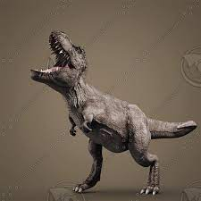

Tyrannosaurus rex, es la única especie conocida del género fósil Tyrannosaurus de dinosaurio terópodo tiranosáurido, que vivió a finales del período Cretácico, hace aproximadamente entre 68 y 66 millones de años. en el Maastrichtiense, en lo que es hoy América del Norte.
